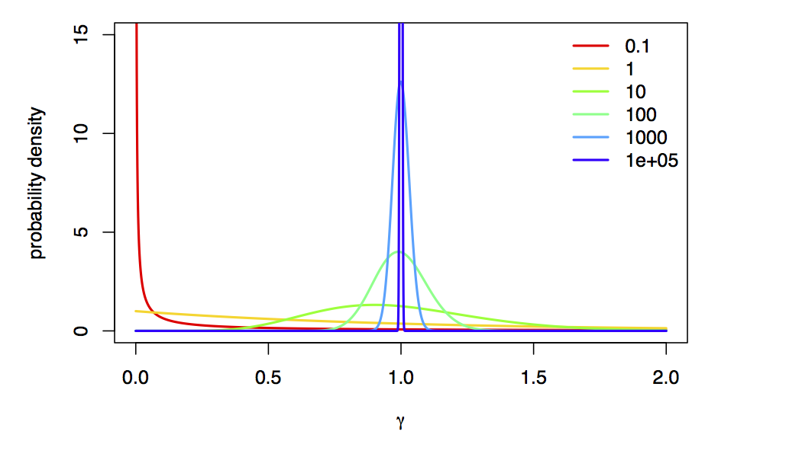
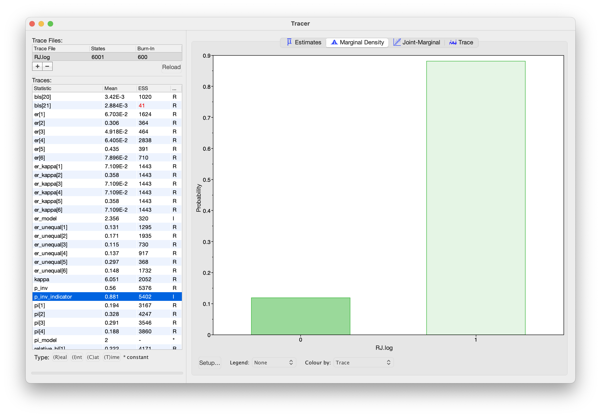

In this tutorial, we will learn how to use Bayesian model selection tools to compare between alternative substitution models. We will also use Bayesian model averaging with reversible-jump MCMC to average over uncertainty in substitution models.
Introduction
For most sequence alignments, several (possibly many) substitution models of varying complexity are plausible a priori. We therefore need a way to objectively identify the model that balances estimation bias and inflated error variance associated with under- and over-parameterized models, respectively. Increasingly, model selection is based on Bayes factors [e.g., (Suchard et al. 2001; Lartillot 2006; Xie et al. 2011; Baele et al. 2012; Baele et al. 2013)], which involves first calculating the marginal likelihood of each candidate model and then comparing the ratio of the marginal likelihoods for the set of candidate models.
Given two models, $M_0$ and $M_1$, the Bayes-factor comparison assessing the relative fit of each model to the data, $BF(M_0,M_1)$, is:
\[\begin{aligned} BF(M_0,M_1) = \frac{\mathbb{P}(\mathbf X \mid M_0)}{\mathbb{P}(\mathbf X \mid M_1)}, \end{aligned}\]where $\mathbb{P}(\mathbf X \mid M_i)$ is the marginal likelihood of model $M_i$ (this may be familiar to you as the denominator of Bayes Theorem, which is variously referred to as the model evidence or integrated likelihood). Formally, the marginal likelihood is the probability of the observed data ($\mathbf X$) under a given model ($M_i$) that is averaged over all possible values of the parameters of the model ($\theta_i$) with respect to the prior density on $\theta_i$
\[\begin{equation} \mathbb{P}(\mathbf X \mid M_i) = \int \mathbb{P}(\mathbf X \mid \theta_i) \mathbb{P}(\theta_i)dt. \tag{Marginal Likelihood}\label{eq:marginal_likelihood} \end{equation}\]This makes it clear that more complex (parameter-rich) models are penalized by virtue of the associated prior: each additional parameter entails integration of the likelihood over the corresponding prior density.
Note that interpreting Bayes factors involves some subjectivity. That is, it is up to you to decide the degree of your belief in $M_0$ relative to $M_1$. Despite the absence of an absolutely objective model-selection threshold, we can refer to the scale [outlined by (Jeffreys 1961)] that provides a “rule-of-thumb” for interpreting these measures ().
| Strength of evidence | BF($M_0$,$M_1$)** | log(BF($M_0$,$M_1$)) | $log_{10}(BF(M_0$,$M_1))$ |
|---|---|---|---|
| Negative (supports $M_1$) | $<1$ | $<0$ | $<0$ |
| Barely worth mentioning | $1$ to $3.2$ | $0$ to $1.16$ | $0$ to $0.5$ |
| Substantial | $3.2$ to $10$ | $1.16$ to $2.3$ | $0.5$ to $1$ |
| Strong | $10$ to $100$ | $2.3$ to $4.6$ | $1$ to $2$ |
| Decisive | $>100$ | $>4.6$ | $>2$ |
We can perform a Bayes factor comparison of two models by calculating the marginal likelihood for each one. Alas, exact solutions for calculating marginal likelihoods are not known for phylogenetic models (see equation \eqref{eq:marginal_likelihood}), thus we must resort to numerical integration methods to estimate or approximate these values. In this exercise, we will estimate the marginal likelihood for each model using both the stepping-stone (Xie et al. 2011; Fan et al. 2011) and path sampling estimators (Lartillot 2006; Baele et al. 2012).
Substitution Models
The models we use here are equivalent to the models described in the previous exercise on substitution models (continuous time Markov models). To specify the model please consult the previous exercise. Specifically, you will need to specify the following substitution models:
- Jukes-Cantor (JC) substitution model (Jukes and Cantor 1969)
- General-Time-Reversible (GTR) substitution model (Tavaré 1986)
- Gamma (+G) model for among-site rate variation (Yang 1994)
- Invariable-sites (+I) model (Hasegawa et al. 1985)
The scripts we use to specify these models are almost identical to those we used in our previous tutorial, Bayesian phylogenetic inference with GTR. The main difference is that we must perform a so-called “power-posterior” analysis instead of a standard MCMC analysis.
Estimating the Marginal Likelihood
We will estimate the marginal likelihood of a given model using a
power-posterior algorithm. This algorithm is
similar to the familiar MCMC algorithms, which are intended to sample
from (and estimate) the joint posterior probability of the model
parameters. Power-posterior algorithms are like a series of MCMC
simulations that iteratively sample from a specified number of
distributions that are discrete steps between the posterior and the
prior probability distributions. The basic idea is to estimate the
probability of the data for all points between the posterior and the
prior—effectively summing the probability of the data over the prior
probability of the parameters to estimate the marginal likelihood.
Technically, the steps correspond to a series of powerPosteriors(),
where the likelihood is iteratively raised to a series of numbers
between 1 and 0 (Figure [fig:ss]). When the likelihood is raised to
the power of 1 (typically the first stepping stone), samples are drawn
from the (untransformed) posterior. By contrast, when the likelihood is
raised to the power of 0 (typically the last stepping stone), samples
are drawn from the prior. To perform a stepping-stone simulation, we
need to specify (1) the number of stepping stones (power posteriors)
that we will use to traverse the path between the posterior and the
prior (e.g., we specify 50 or 100 stones),
(2) the spacing of the stones between the posterior and prior
(e.g., we may specify that the stones are
distributed according to a beta distribution), (3) the number of samples
(and their thinning) to be drawn from each stepping stone, and (4) the
direction we will take (i.e., from the
posterior to the prior or vice versa).

This method computes a vector of powers from a beta distribution, then executes an MCMC run for each power step while raising the likelihood to that power. In this implementation, the vector of powers starts with 1, sampling the likelihood close to the posterior and incrementally sampling closer and closer to the prior as the power decreases.
Estimating the Marginal Likelihood for the JC Substitution Model
We’ll begin with the simplest substitution model, the Jukes-Cantor model.
We specify this model in the powp_JC.Rev script. Here, we focus on the parts of this code that are specific to power-posterior analysis, rather than the substitution model itself. To perform a power-posterior analysis, we replace the standard mcmc() analysis function with the powerPosterior() analysis function. This function is similar to the standard MCMC, but we must specify the number of powers (stones) to use (cats), the filename(s) for the samples from individual stones, and the frequency with which to write sampled likelihood values to file (sampleFreq):
# We create a power-posterior object:
pow_p = powerPosterior(my_model, moves, monitors, filename="analyses/"+output_stub+".out", sampleFreq=5, cats=20)
(note that output_stub was a variable that we can change for each model, in this case it is ppJC, because we’re doing a power-posterior analysis with the Jukes-Cantor model).
Now we run the power-posterior analysis:
# We run _each stone_ MCMC for 5,000 iterations:
pow_p.run(generations=5000)
Note that the number of generations is per stone! That means that this stepping-stone analysis will actually perform cats * generations total generations.
Also note that this analysis will perform a short burnin for each stone (by default, 10%), which adapts the MCMC proposals to the current stone.
After the power-posterior analysis completes, we read the samples back into RevBayes to compute the marginal likelihood either with the path-sampler or stepping-stone sampler algorithms:
# compute the marginal likelihood with the path-sampling equation
ps = pathSampler(file="analyses/"+output_stub+".out", powerColumnName="power", likelihoodColumnName="likelihood")
print("Marginal likelihood (path sampling): " + ps.marginal())
# compute the marginal likelihood with the stepping-stone equation
ss = steppingStoneSampler(file="analyses/"+output_stub+".out", powerColumnName="power", likelihoodColumnName="likelihood")
print("Marginal likelihood (stepping-stone): " + ss.marginal())
For a small number of stones, the stepping-stone sampler should provide a more accurate estimate of the marginal likelihood. However, as the number of stones increases, we expect the estimates to converge. Therefore, it’s a good idea to use both estimators to check that they are close to each other (which indicates that the estimates are relatively stable).
Exercise 1
- Compute the marginal likelihoods of the cytb alignment for the
following substitution models:
- Jukes-Cantor (JC) substitution model
- General-Time-Reversible (GTR) substitution model
- GTR with gamma distributed-rate model (GTR+G)
- GTR with invariable-sites model (GTR+I)
- GTR+I+G model
- Enter the marginal likelihood estimate for each model in the corresponding cell of the table below.
- Which is the best fitting substitution model?
| Model | Path-Sampling | Stepping-Stone-Sampling |
|---|---|---|
| JC ($M_1$) | ||
| GTR ($M_2$) | ||
| GTR+$\Gamma$ ($M_3$) | ||
| GTR+I ($M_4$) | ||
| GTR+$\Gamma$+I ($M_5$) |
Bayesian Model Averaging
Sometimes, the data are indecisive about which model is preferred by Bayes factor. We call this phenomenon model uncertainty because we’re actually uncertain about which model is the best description of the process that generated our data. The natural Bayesian solution to this problem is simply to treat the model itself as a random variable, which averages parameter estimates (including the tree, branch lengths, and all substitution model parameters) over the uncertainty in the model itself. We accomplish this (generally) using a special “reversible-jump” MCMC algorithm (also known “rjMCMC”, “transdimensional MCMC”, or “the Green algorithm”) which adds, removes, or combines parameters to move between models.
The state space of potential models is vast, so we’ll restrict ourselves to a very particular set of models, in particular, we’re going to average over the “named” members of the GTR models (the ones you learned specifically in class), models with and without Gamma-distributed ASRV, and models with and without a proportion of invariable sites.
This analysis is specified in the RJ_MCMC.Rev script; in this example, we use ITS sequences from the genus Fagus (Beech trees). We will skip over details of this script that do not relate to the substitution model, for example the tree topology and branch lengths, and instead focus on the model-averaging aspects of this script.
Averaging over stationary frequency models
We use the distribution dnReversibleJumpMixture to jump between models with uniform (equal) and non-uniform stationary frequencies.
To use this distribution, we must provide: 1) a fixed value (the value the parameter takes when it is not estimated), 2) a prior distribution (for when the parameter value is estimated), and 3) the prior probability that the parameter is estimated.
# We first define reversible jump over uniform and non-uniform stationary frequencies
# to construct the stationary frequency mixture
pi ~ dnReversibleJumpMixture(simplex(v(1,1,1,1)), dnDirichlet(v(1,1,1,1)), 0.5)
Now, we use an MCMC proposal that moves between the two models (equal and non-equal), as well as a proposal that modifies the parameter value when it is estimated:
# include proposals for jumping between models, as well as for the
# parameter when it is estimated
moves.append( mvRJSwitch(pi, weight=10.0) )
moves.append( mvBetaSimplex(pi, weight=2.0) )
Finally, we will keep track of which stationary frequency model the MCMC is visiting, by creating a helper variable that is 0 when the frequencies are equal, and 1 when the frequencies are estimated:
# We track whether the stationary frequencies are uniform
pi_model_indicator := ifelse(pi == simplex(v(1,1,1,1)), 0, 1)
Averaging over exchangeability-rate models
We will consider three models for exchangeability rates: 1) a model with equal exchangeability rates, 2) a model with a transition-transversion rate parameter, and 3) a model where all exchangeability rates are different.
In this case, we won’t be to use the dnReversibleJumpMixture distribution because we have more than two models.
Instead, we’ll specify separate exchangeability-rate parameters for each model, and then sample the exchangeability rates from among those models.
We begin by specifying the equal-rates model. In this case, all exchangeability rates are the same, so there are no free parameters:
# 1. An equal rates model
er_flat <- simplex(rep(1,6))
Next, we specify a model with transition and transversion rates using the parameter kappa.
We first create the kappa parameter:
# 2. A model with different transition and transversion rates
kappa ~ dnUniform(0, 10)
moves.append( mvScale(kappa, weight=2.0) )
and then we create a vector of exchangeability rates using kappa:
er_kappa := simplex(v(1, kappa, 1, 1, kappa, 1))
Finally, we specify a model with unequal exchange rates by drawing them from a Dirichlet prior:
# 3. A model with unequal exchange rates
er_unequal ~ dnDirichlet(v(1,1,1,1,1,1))
moves.append( mvBetaSimplex(er_unequal, weight=2.0) )
Now that we have specified our three exchangeability-rate models, we group them together in a single vector:
# We place all of the exchange rates in a list of rates...
er_vec := v(er_flat, er_kappa, er_unequal)
and then draw the exchangeability rates to use in the model from a mixture distribution:
# ... and then we draw the exchange rates from this list
er ~ dnMixture( values=er_vec, probabilities=simplex(rep(1, er_vec.size())) )
This distribution draws the er parameter from among the provided values (er_vec), each with equal prior probability (specified with simplex(rep(1, er_vec.size()))).
We then provide a move that proposes to change er to one of the other values in the er_vec vector:
moves.append( mvGibbsMixtureAllocation(er, weight=10.0) )
Once again, we set up helper variables to keep track of which model we are visiting:
# We track which exchange-rate vector we are visiting
er_model_indicator := ifelse(er == er_flat, 1, ifelse(er == er_kappa, 2, 3))
kappa_indicator := ifelse(er == er_kappa, 1, 0)
er_unequal_indicator := ifelse(er == er_unequal, 1, 0)
Now that we have both stationary frequencies and exchangeability rates, we can provide them to the fnGTR function to create our Q matrix:
# Finally, we use the stationary frequencies and exchange rates to construct
# a model (using the most generic GTR model)
Q := fnGTR(er, pi)
Averaging over ASRV models
We can jump over Gamma-distributed rate models using dnReversibleJumpMixture like so:
# We jump between models with and without rate heterogeneity across sites
# A model without rate heterogeneity is like a model with rate heterogeneity,
# but with a high alpha value
alpha ~ dnReversibleJumpMixture(10000, dnUniform( 0, 10 ), 0.5)
In this case, we are moving between models with a very large alpha value (10000) and with estimated alpha values (between 0 and 10 a priori).
We’re using a value of alpha=10000 to approximate “no rate variation”,
because, as $\alpha \rightarrow \infty$, the Gamma-model collapse to a spike at 1 (i.e., approximately no rate variation):

As before, we specify proposals for the model as well as alpha, and construct the site-rates vector using the sampled value of alpha:
# We define a move on the parameter of the gamma distribution for rate heterogeneity across sites:
moves.append( mvRJSwitch(alpha, weight=5.0) )
moves.append( mvScaleBactrian(alpha, weight=2.0, tune=TRUE) )
# We compute the site rates for the sampled value of alpha
sr := fnDiscretizeGamma( alpha, alpha, 4 )
Finally, we track whether alpha is “included” in the model:
alpha_indicator := ifelse(alpha == 10000, 0, 1)
Averaging over invariable-sites models
Finally, we jump over models without invariable sites (p_inv = 0) and models with invariable sites (p_inv > 0).
This works very similarly to the stationary frequency and ASRV models, so we will skip the gory details:
# We jump between models with and without invariable sites
p_inv ~ dnReversibleJumpMixture(0, dnBeta(1,1), 0.5)
# We keep track of whether pinv is "included" in the model
p_inv_indicator := ifelse(p_inv == 0, 0, 1)
# We define a move on the proportion of invariable sites parameter
moves.append( mvRJSwitch(p_inv, weight=5.0) )
moves.append( mvSlide(p_inv, tune=TRUE) )
Putting the models together
We’ve set these models up in such a way that the likelihood function doesn’t need to know the exact identity of the model! That is, in all cases we have some value of pi, er, site_rates, and p_inv, regardless of the identify of the current model (i.e., whether or not a particular model component is “included” in the model).
Therefore, we can simply pass these variables to the CTMC model as we did in the previous tutorial:
seq ~ dnPhyloCTMC( tree=psi, Q=Q, siteRates=sr, pInv=p_inv, type="DNA")
Running the MCMC
Beyond having special prior distribution and proposals for reversible-jump models, there is nothing special we have to do to run this analysis: it is just a regular MCMC at this point! We create our model and monitors as before, and run a standard MCMC as we did in the previous tutorial. Because we sample the substitution models in proportion to their posterior probability, our estimates of the phylogeny will naturally average over uncertainty in the substitution models.
Estimating posterior probabilities of models
In addition to averaging our phylogenetic estimates over uncertainty in the substitution model, we can also use RJ MCMC to estimate the posterior probabilities of the models themselves! When using RJ MCMC, the posterior probability of a given model is the fraction of times that model is sampled during the MCMC. Here, we examine the posterior probability of the invariable-sites models:

p_inv indicator. When p_inv_indicator is 0, the invariable-sites model is “turned off”; when it is 1, it is “turned on”. Therefore, the fraction of samples for which p_inv_indicator = 1 is the posterior probability of the invariable-sites model.Exercise 2
- Run the reversible-jump MCMC analysis on the Fagus ITS dataset.
- Then, repeat the analysis with the matK and rbcL datasets.
- Enter the posterior probabilities for each model/locus combination in the corresponding cell of the table below.
| Model | ITS | matK | rbcL |
|---|---|---|---|
| Unequal stationary frequencies | |||
| Transition-transversion model | |||
| Unequal exchange-rates model | |||
| Gamma-distributed rates | |||
| Invariable sites |
- Baele G., Lemey P., Bedford T., Rambaut A., Suchard M.A., Alekseyenko A.V. 2012. Improving the Accuracy of Demographic and Molecular Clock Model Comparison while Accommodating Phylogenetic Uncertainty. Molecular Biology and Evolution. 29:2157–2167. 10.1093/molbev/mss084
- Baele G., Li W.L.S., Drummond A.J., Suchard M.A., Lemey P. 2013. Accurate Model Selection of Relaxed Molecular Clocks in Bayesian Phylogenetics. Molecular Biology and Evolution. 30:239–243. 10.1093/molbev/mss243
- Fan Y., Wu R., Chen M.-H., Kuo L., Lewis P.O. 2011. Choosing among Partition Models in Bayesian Phylogenetics. Molecular Biology and Evolution. 28:523–532.
- Hasegawa M., Kishino H., Yano T. 1985. Dating of the Human-Ape Splitting by a molecular Clock of Mitochondrial DNA. Journal of Molecular Evolution. 22:160–174. 10.1007/BF02101694
- Jeffreys H. 1961. The Theory of Probability. Oxford University Press. 10.1038/109132a0
- Jukes T.H., Cantor C.R. 1969. Evolution of Protein Molecules. Mammalian Protein Metabolism. 3:21–132. 10.1016/B978-1-4832-3211-9.50009-7
- Lartillot N. 2006. Conjugate Gibbs Sampling for Bayesian Phylogenetic Models. Journal of Computational Biology. 13:1701–1722.
- Suchard M.A., Weiss R.E., Sinsheimer J.S. 2001. Bayesian Selection of Continuous-Time Markov Chain Evolutionary Models. Molecular Biology and Evolution. 18:1001–1013.
- Tavaré S. 1986. Some Probabilistic and Statistical Problems in the Analysis of DNA Sequences. Some Mathematical Questions in Biology: DNA Sequence Analysis. 17:57–86.
- Xie W., Lewis P.O., Fan Y., Kuo L., Chen M.H. 2011. Improving Marginal Likelihood Estimation for Bayesian Phylogenetic Model Selection. Systematic Biology. 60:150–160.
- Yang Z. 1994. Maximum Likelihood Phylogenetic Estimation from DNA Sequences with Variable Rates Over Sites: Approximate Methods. Journal of Molecular Evolution. 39:306–314. 10.1007/BF00160154